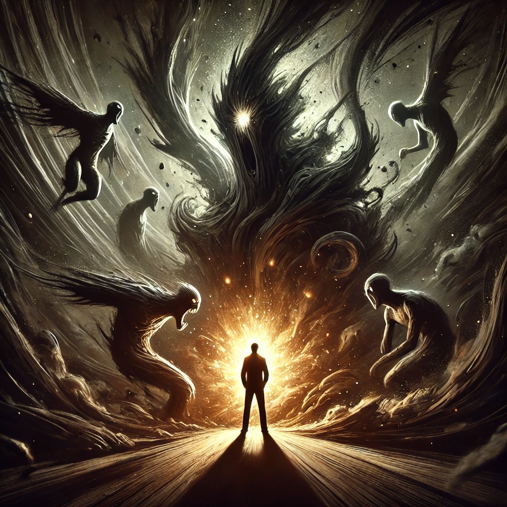

You open your eyes to face the swirling darkness within. The shadows rise around you, taking on twisted forms—fragments of fears, regrets, and doubts from your past. They whisper to you, their voices low and cutting:
“You cannot escape us. We are your pain, your failure, your deepest truths.”
The air thickens, and the pull of the shadows grows stronger. Yet, within you, a spark of courage flickers. You plant your feet firmly and steady your breath, determined to face what lies ahead.
The largest shadow steps forward, its form towering and chaotic. “What will you do, seeker?” it asks. Its voice is both haunting and familiar, like an echo from your own soul.

How will you confront the shadows?